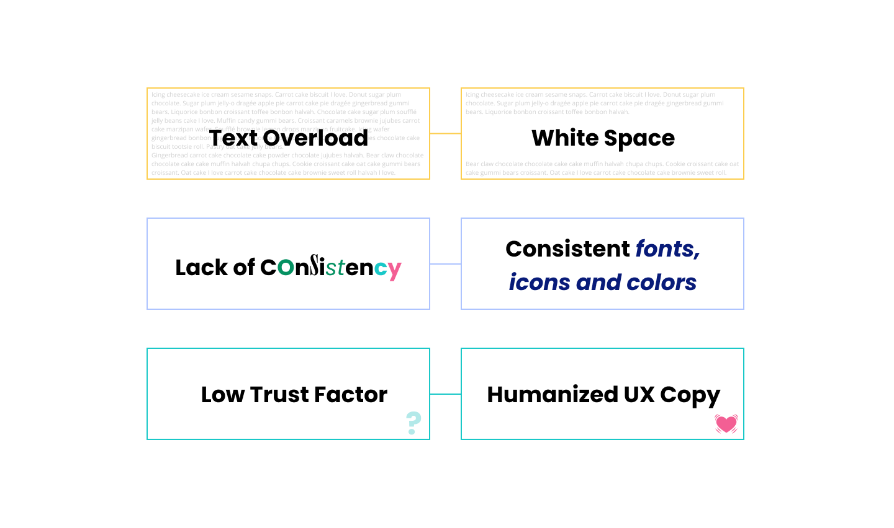
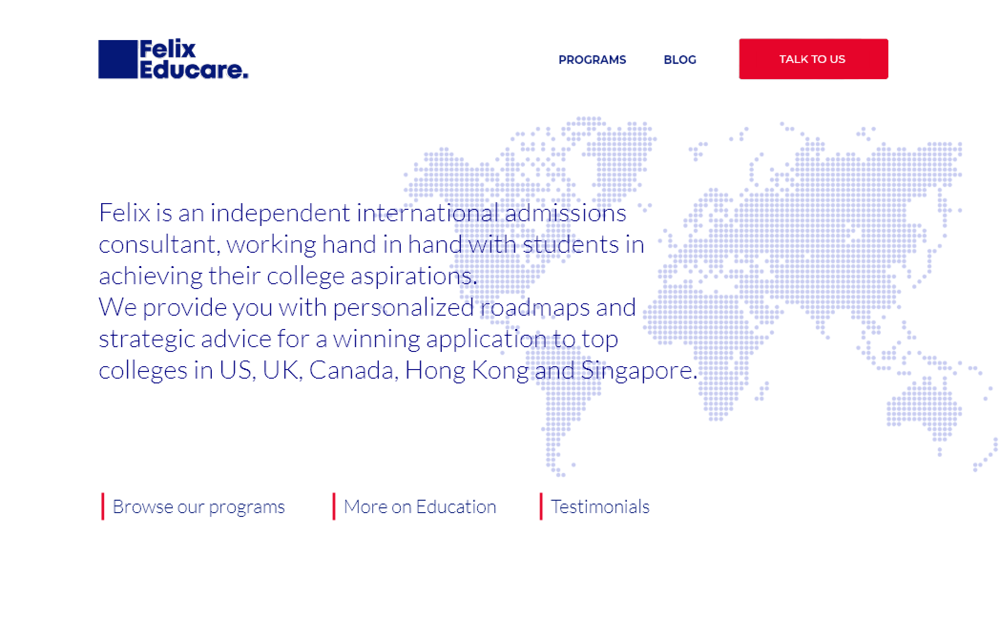
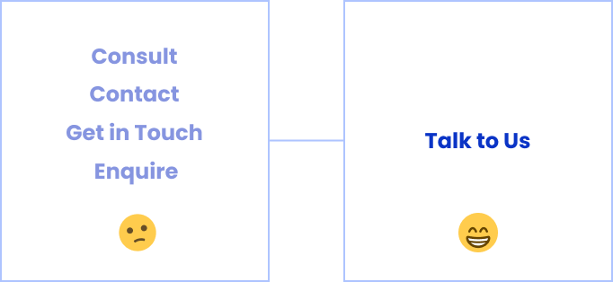

SOLUTION
Before I dive into the details of the solution finding process, here is an overview of the pain points and their respective solutions. These pain points were accumalated through interviews, competitor analysis and client preferences.

1. Presentation of information
From most of the research sources, it was clear that information representation was one of the most important aspects of a education consultancy website. After making the 3 personas, I wanted to make sure that our solution was suited for all kinds of users, not just one. So, I made use of generous amount of white space while displaying text heavy information.
Considering that an average person browses a website for 15s, we wanted to ensure maximum information absorption within this short time period. The solution to this was to have sections of solid color with clear text over it. Our aim was to minimize the textual content as much as possible and replace it with visuals but without creating a hodgepodge of images and graphics - which would in turn increase cognitive load for the user. For essential information points which could not entirely be replaced by a visual, we used a combination of text and visual.
This was important for my client to understand because for my client, the idea of information was text. But for a user, it could be anything. So we incorporated a video for the landing page (and optimised it for slower internet speeds). We made the company USPs into a well spaced section with more visual than text, while also keeping style consistency in mind.

2. Call to Action
Our aim was to have keep the user assisted on every screen. So we decided to place a CTA that said "Talk to Us" onto the navbar itself. Also decided to make the Navbar sticky so it is accessible on every screen.
Moreover, we placed the links to the 3 crucial sections of the website (Program Info, Blog, Testimonials) on the very first section itself.

3. UX Copy to humanize the website
For a service that involves constant communication between the student and the consultant, most of these consultancy websites follow a standard process of depicting information. This results in questionable trust factor (as we gathered from the user interviews - one even said that it felt like the website felt "machine-like"). This however, seemed to be a pain point that users had adapted to, they stated that "But all websites are like this. Just a dump of information". So we decided to get the magic of UX copy to our wesbite. An instance shown below.

4. Color Scheme and Font Style
With most of the first-time visitors being school students, (inputs from interviews and the founder) I decided to go with primary shades of the color wheel. Another reason for this choice was to use color blocking to highlight areas of the website that require maximum attention.